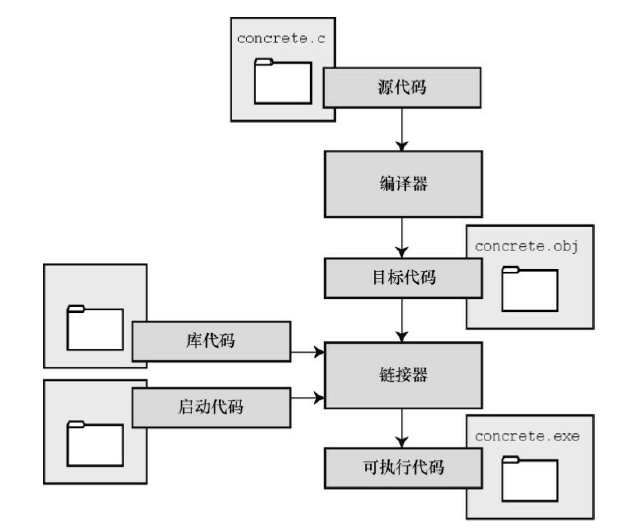
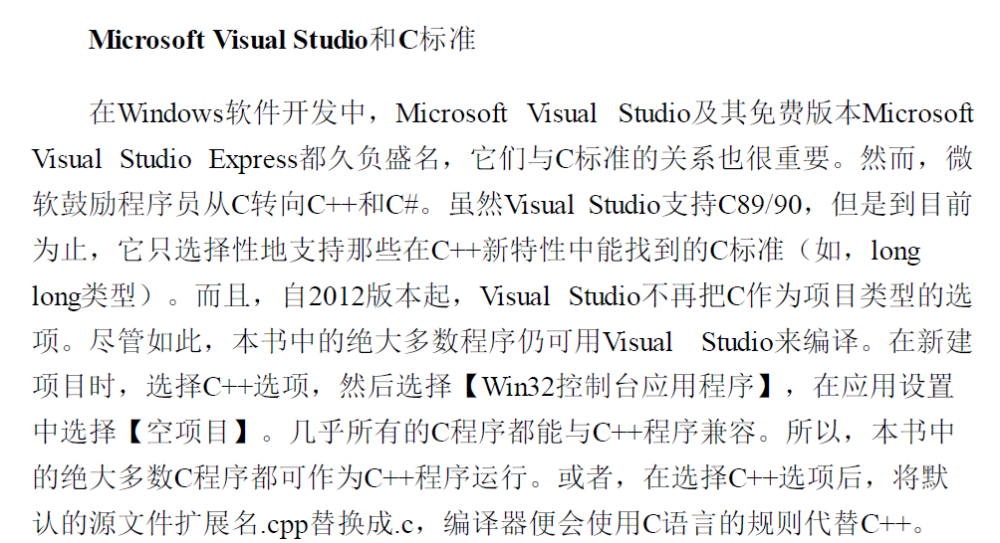

第一章 初识C语言
1.1 C语言的起源
1972年，贝尔实验室的丹尼斯·里奇（Dannis Ritchie）和肯·汤姆逊（Ken Thompson）
在B语言的基础上进行设计
1.2 选择c语言的理由
- 设计特性
- 高效性
- 可移植性
- 强大而灵活
- 面向程序员
- 缺点：指针
1.3 C语言的应用范围
- 系统
- 程序
- 编译器
- 游戏
1.4 计算机能做什么
从内存中获取并执行一条指令，然后再从内存中获取并执行下一条指令
两个有趣的知识：
- 存储在计算机的所有内容都是数字；
- 计算机程序最终必须以机器语言来表示。
1.5 高级计算机语言和编译器
高级语言以更抽象的方式描述行为，不受限于CPU或指令集，但需要编译器翻译成机器语言。
1.6 语言标准
- 1978年，《The C Programming Language》 K&R Brian Kernighan和Dannis Ritchie 称为K&R C或经典C
- 1983-1989年，美国国家标准协会 ANSI C
- 1990年，国际化标准组织采用。ISO C 和ANSI C完全相同，称ANSI/ISO C 通常叫做C89 （ANSI1989年批准）或C90 （ISO1990年批准）
- 1994年 ，ANSI/ISO联合会修订，发布C99标准
- 2011年，标准委员会发布 C11标准
1.7 使用C语言的7个步骤
- 定义程序的目标
- 设计程序
- 编写代码
- 编译
- 运行程序
- 测试和调试程序
- 维护和修改程序
1.8 编程机制

